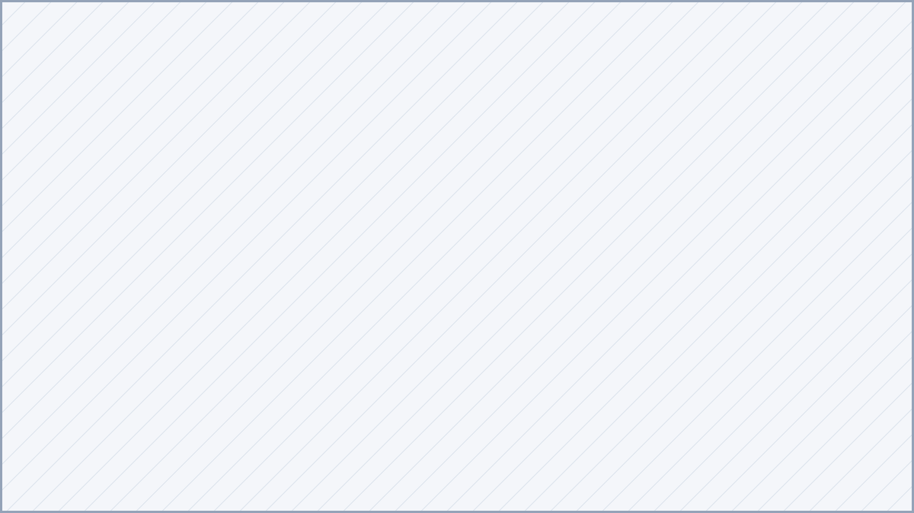

Shiprocket
Plugin type: Shipping · Menu path: Settings → Plugins → Shiprocket → Settings
Turns Shiprocket into a courier your panel can use: it quotes live rates between two pincodes, checks whether a pincode is serviceable, books parcels, gets waybills, prints labels and manifests, schedules pickups, keeps tracking in sync, and collects returns from the customer's door.
Install it the way every plugin installs — see Plugins.
Before you start
| You need | Why |
|---|---|
| A Shiprocket account with a pickup address added | Shiprocket will not book a parcel from an address it does not hold |
| An API user — Shiprocket → Settings → API → Configure | Its email and password are what SnapBuy signs in with |
| Money in the Shiprocket wallet | An empty wallet is the most common reason a waybill is refused |
| Weight on your product variants | A parcel with no weight cannot be quoted |
| A pincode on each store | It is the pickup end of every quote |
Create a separate API user
Use Shiprocket → Settings → API → Configure rather than the account owner's own login. Then changing the owner's password does not stop your shop shipping.
Settings

| Field | Required | What it does |
|---|---|---|
| Mode | Yes | Sandbox uses Shiprocket's test environment and moves no real parcels. Live books real shipments. Defaults to Sandbox, so a fresh install cannot dispatch by accident. |
| Shiprocket API Email | Yes | The API user's email. |
| Shiprocket API Password | Yes | That user's password. Stored on your server and never shown again — leave it blank when editing to keep the saved value. |
| Channel ID | No | Files these orders under a specific Shiprocket sales channel. Leave empty unless you use channels for your own reporting. |
| API Base URL Override | No | Leave empty. Mode already picks the right endpoint; fill this only if Shiprocket gave you a one-off URL. |
| Tracking Webhook Token | No | Any secret you choose. Paste the same value into Shiprocket's webhook settings, and tracking updates arrive within seconds. |
| Tracking Updates (Webhook) | — | Read-only, with a copy button. This is the URL to paste into Shiprocket. |
| Assign Waybill Automatically | Default on | Requests the tracking number as soon as a parcel is created. Switch off only if you allocate couriers inside Shiprocket. |
| Request Pickup Automatically | Default off | Books the courier pickup as soon as a waybill exists. Off because most desks batch their pickups for the day. |
Wiring up tracking
- Put a value of your own into Tracking Webhook Token and save.
- Copy the Tracking Updates (Webhook) URL from the same form.
- In Shiprocket, open Settings → API → Webhooks and paste both.
Without the webhook, tracking still works — slower
A scheduled sync asks Shiprocket about every parcel still in flight every half hour, so status changes, delivery notifications, COD settlement and return refunds never depend on a push that was never configured. The webhook simply makes it seconds instead of minutes. The sync needs your cron job running.
The token is what proves a tracking post came from Shiprocket
A post without a matching token is rejected. Use a long random string, not a word.
Connecting each store
Shiprocket identifies a pickup point by a nickname registered on your account, not by an address — so each store has to be matched to one before it can ship.
Stores → edit a store → Location

| Control | What it does |
|---|---|
| Pincode | The pickup pincode a courier quotes from. Required for booking. |
| Check Pickup | Asks Shiprocket whether it collects from this pincode, and whether this store is already matched to one of your pickup addresses |
| Register with Shiprocket | Appears when the store is not matched yet. One click sends this store's own address up to Shiprocket under a name derived from the store, so the two sides cannot drift apart. |
Booking is refused until a store is connected
You will see "This store is not connected to Shiprocket yet". That is deliberate — the alternative is a courier arriving at whichever warehouse happened to be first in the list. Fill in the store's address and pincode, then use Register with Shiprocket.
Shiprocket verifies a new pickup address before it can ship
Right after registering you may see "waiting for their verification". That is Shiprocket's own check, not SnapBuy's. It also needs a ten-digit contact number on the store.
Telling a zone it may use the courier
A courier appears on orders only where its zone allows it.
Zones → edit a zone → eCommerce

How this zone delivers
Tick the doors this zone may use. Untick one and it disappears from that zone's orders.
| Method | Means |
|---|---|
| Courier | Book parcels through an installed shipping plugin |
| Delivery boy | Your own rider |
| Manual tracking | Type another courier's tracking number in by hand |
Courier on its own also refuses pincodes
When the courier is a zone's only method, a pincode Shiprocket will not serve cannot be ordered to at all — nobody else could deliver it. With all three ticked, an unserviceable pincode is still orderable, because a rider or another courier can take it.
Pricing strategy = Courier
Setting the eCommerce pricing strategy to Courier prices delivery from the live quote for the customer's pincode. It is offered only when the courier door is ticked and a usable courier serves the zone's country.
| Field | What it does |
|---|---|
| Markup Type | None, a flat amount, or a percentage added to the courier's own rate |
| Markup Value | How much, in the zone's currency or as a percentage |
| Round Up To | Rounds the final charge up to a multiple of this. 5 turns 43.20 into 45. 0 = no rounding. |
| Minimum Delivery Charge | The customer never pays less than this. 0 = no floor. |
| Fallback flat pricing | Charged whenever no courier answers |
A carrier outage never blocks checkout
When no courier answers — no plugin, an unserviceable pincode, Shiprocket unreachable — the zone's fallback flat rule is charged instead. Set it to something sensible rather than leaving it at zero.
Markup keeps your margin steady
Carriers reprice periodically. A markup percentage rides those changes; a flat delivery charge does not.
Weight and box size on products
Products → edit a product → each variant
| Field | What it does |
|---|---|
| Shipping Weight (kg) | Dead weight of one unit. Used to quote and to label the parcel. |
| Package Size (cm) | Length, breadth, height. Used for volumetric weight — what a courier bills on when a parcel is light and bulky. |
A variant with no weight blocks booking
The ship dialog refuses with "add weight to these products first" and names them. It will not invent a weight for you — a guessed weight becomes a wrong charge on your Shiprocket bill. Box size is optional; without it a default box is sent.
Shipping an order
Orders → open an order. Each item offers the doors its zone allows.
The ship dialog
| Part | What it shows |
|---|---|
| Pickup and delivery addresses | Where the parcel goes from and to |
| Parcel | Weight and dimensions, prefilled and editable, with the volumetric weight alongside and a Reset button |
| Courier rows | The couriers Shiprocket quoted, with rate and estimated days — pick one |
| Account balance | Your Shiprocket wallet, because an empty wallet is why waybills fail |
What stops a booking, and what to do:
| Message | Fix |
|---|---|
| Add weight to these products first | Set Shipping Weight on the named variants |
| Store pickup pincode is missing | Fill the store's pincode |
| Customer pincode is missing | The order has no destination pincode |
| Customer city or state is missing | Couriers reject an address with no town |
| This zone does not ship by courier | Tick Courier on the zone |
| No shipping provider is available | The plugin is not installed, enabled or configured |
After booking
| Action | Notes |
|---|---|
| Waybill | Assigned automatically unless you switched that off |
| Print label | Needs a waybill |
| Schedule pickup | Asks Shiprocket to collect |
| Refresh tracking | Pulls the latest scan now instead of waiting |
| Cancel | Allowed until the parcel is collected |
| NDR answer | On a failed delivery: ask for a reattempt, or send it back |
A waybill cannot be assigned on an empty wallet
Shiprocket's own error does not say so. SnapBuy shows your balance beside the failure for exactly that reason: "Your Shiprocket wallet balance is zero, which is why no waybill could be assigned."
Status follows the courier once a parcel is booked
Each scan moves the item along — Processed, Shipped, Out for delivery, Delivered. You can still move a booked line by hand (carriers do miss scans), but the panel offers it quietly and the confirmation names what you are overriding.
The Shipments page
Menu path: Shipments — the dispatch desk, one row per parcel across every order. Full detail: Shipments.

| Tab | Holds |
|---|---|
| To Dispatch | Not handed to anyone yet |
| Awaiting Waybill | Booked with the courier, waiting for a waybill |
| Ready to Ship | Has a waybill, not collected yet |
| In Transit | On its way |
| Delivered | Done |
| Needs Attention | A delivery attempt failed |
Filter by date range and store, search by order, waybill, product or customer, then select rows for the bulk actions: print labels, print manifest, schedule pickup, refresh tracking and print delivery receipts. Your Shiprocket balance is shown at the top.
Two tabs belong to the courier
Awaiting Waybill and Needs Attention only make sense with a shipping plugin installed, so they are hidden otherwise. Delivery receipts print for any parcel, courier or not.
Courier updates and returned parcels
Settings → Notification Settings grows two controls once a shipping plugin is installed.

| Setting | Options | What it decides |
|---|---|---|
| Customer Notifications for Courier Updates | On delivery only (default), On every courier update, Never | Whether SnapBuy messages the customer as the parcel travels |
| Parcels the courier brings back | Settle the line (default), Only flag it for staff | What happens when a parcel comes back undelivered |
The courier already texts your customer
Shiprocket sends its own SMS at pickup, in transit and on delivery. Leave this on delivery only unless you have switched the courier's own messages off, or customers are told twice about the same event.
"Settle" moves money on its own
A returned parcel is a cancellation that happened at the courier. Settle returns the stock, reverses the tax and refunds a prepaid customer — exactly as cancelling the item by hand would. Choose only flag it for staff if someone should open the box first.
The shopper's pincode check
Settings → General Settings → Pincode Delivery Check lets shoppers check whether their pincode is deliverable before ordering.
The switch only appears once a courier is installed and configured
Only a courier can answer "do you deliver to my pincode?". Without one the setting could be switched on and still do nothing, so SnapBuy hides it. A saved value survives — switch the plugin off and the setting disappears but is remembered.
Return pickups
Return Requests → open a request → Return Pickup. A return can travel back three ways, offered according to the zone's methods: your own rider, a courier booking, or another courier's tracking number typed in by hand.
| Point | Detail |
|---|---|
| When | Once the return is Accepted and nobody else has it |
| Addresses | Reversed — the customer is the pickup, the store is the drop |
| No label or manifest | Shiprocket needs neither for a collection; the collecting rider brings the paperwork |
| Parcel figures | Prefilled from the returned product, editable before booking |
| Cancellation | Allowed until the parcel is collected |
| The refund | Stays manual — a person opens the box and completes it |
Carrier scans move the request along: Out for Pickup → Received from Customer → Return to Store. Refund Completed is never set by a courier.
What installing it adds
| Added | Where |
|---|---|
| Three tables — shipments, shipment items, pickup locations | The plugin's own records, so a parcel stays trackable and cancellable |
| Its language strings | Field labels, hints and carrier messages |
| A tracking webhook action | The URL shown on its settings form |
| Courier rows on the panel | Ship dialog, Shipments tabs, zone pricing, store pickup check, return pickup |
Columns such as the tracking number, courier name and label URL on the order itself belong to SnapBuy, not the plugin — so your dispatch history survives uninstalling it.
Troubleshooting
| Symptom | Cause | Fix |
|---|---|---|
| Shiprocket rejected the email or password | Wrong API user, or the password changed | Re-enter them on the settings form |
| This store is not connected to Shiprocket yet | No pickup address matched | Use Register with Shiprocket on the store |
| Shiprocket does not collect from this pincode | The pickup pincode is outside their network | Check the store's pincode |
| No courier will carry this parcel | Nothing serves that pincode pair, or the parcel is too heavy | Try another courier or deliver by rider |
| No waybill was returned | Usually an empty wallet | Top up the Shiprocket wallet and retry |
| Label is not ready | Shiprocket has not generated it yet | Try again shortly |
| Add weight to these products first | A variant has no shipping weight | Set it on the variant |
| Courier option missing on a zone | Courier unticked, or no usable courier for that country | Tick it on the zone |
| Tracking not updating | Webhook not configured, or cron not running | Paste the webhook URL and token; check Cron Jobs |
| Everything works in testing, nothing ships | Mode is still Sandbox | Switch to Live |
Checklist
- Plugin installed, enabled, licence valid
- API user created in Shiprocket, email and password saved
- Mode set — Sandbox to rehearse, Live to ship
- Webhook token set and pasted into Shiprocket with the URL
- Every store has a pincode and is registered with Shiprocket
- Shipping weight on every variant you sell
- Zone's delivery methods ticked, pricing strategy and markup decided
- Fallback flat pricing set to something sensible
- Courier notification mode and returned-parcel action chosen
- Cron job running
- One real parcel booked, labelled, collected and tracked end to end